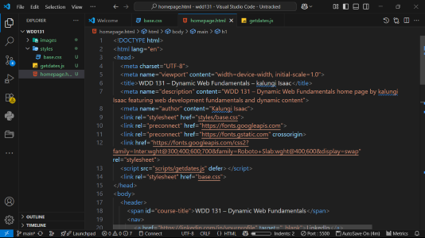

KALUNGI ISAAC
About Me
Welcome to my WDD 131 course page! I'm excited to be learning dynamic web fundamentals and building my skills in HTML, CSS, and JavaScript. This course is helping me understand how to create responsive, accessible, and interactive web experiences.
I'm passionate about web development and look forward to applying these skills in future projects. Through this course, I'm gaining hands-on experience with modern web development practices and tools.
Course Learning Objectives
In WDD 131, I'm learning to create dynamic, responsive web pages using HTML5, CSS3, and JavaScript. Key topics include:
- Semantic HTML structure and accessibility
- CSS Grid and Flexbox for modern layouts
- JavaScript DOM manipulation and event handling
- Responsive design principles
- Web performance optimization
Each week builds upon previous knowledge, culminating in a comprehensive final project that demonstrates mastery of dynamic web fundamentals.